Основы геоинформатики
Лекция 1: Основные понятия
Самсонов Тимофей Евгеньевич
10.02.2023
Географическая информация
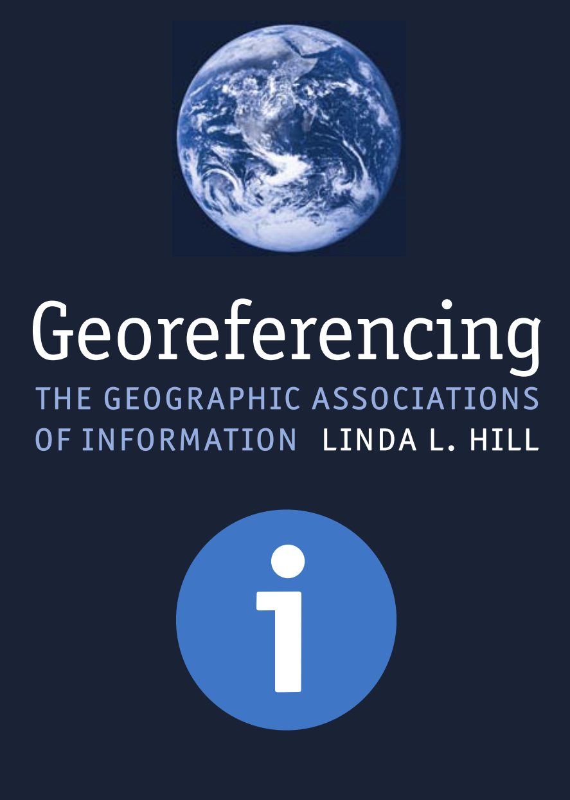
- Географическая информация (ГОСТ Р ИСО 19105-2003 2004)
-
Информация об объектах и явлениях, содержащая в явном или неявном виде указание на их местоположение относительно Земли
- Пространственная привязка (ГОСТ Р 70316-2022 (ИСО 19112:2019) 2022)
-
Описание позиции в реальном мире.
Пространственная привязка
Опорные объекты
- Координаты (59.926° с.ш., 30.339° в.д.)
- Индекс (191002)
- Адрес (Россия, г. Санкт-Петербург, улица Ломоносова, д.9)
- Место (Центральный район)
- Объект (корпус ИТМО)
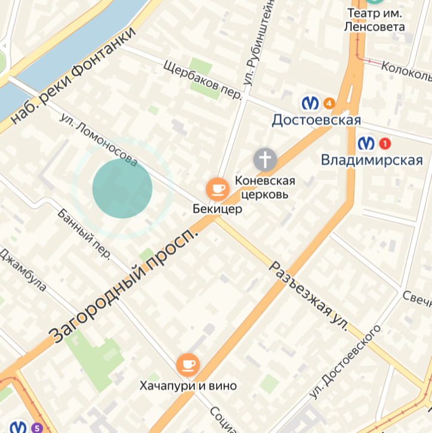
Пространственная привязка
Отношения
Пространственные отношения
Метрические (600 метров от м. Владимирская)
Топологические (примыкает к детскому саду №78)
Дирекционные (на юго-восток от наб. Фонтанки)
Временные отношения (в 15 мин. пешком от Витебского вокзала)
Географическая информация
Динамическая
Оперативная
Массовая
Потоковая
Разнородная
Многомерная
Мультимасштабная
Волонтерская
Неопределенная
Синтезируемая
Статическая
Эпизодическая
Небольшого количества
Хранимая
Однородная
Двумерная, одномерная
Мономасштабная
Профессиональная
Определенная
Реальная
Динамическая
Что может меняться у пространственного объекта?
Геометрия
Местоположение
Внутренняя структура
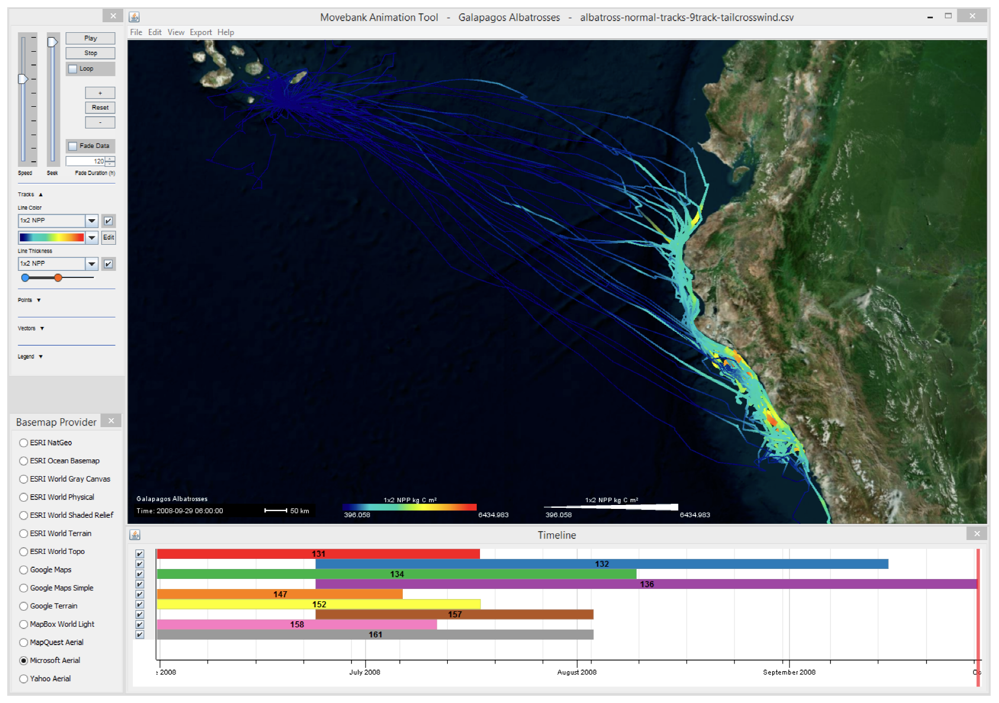
Динамическая
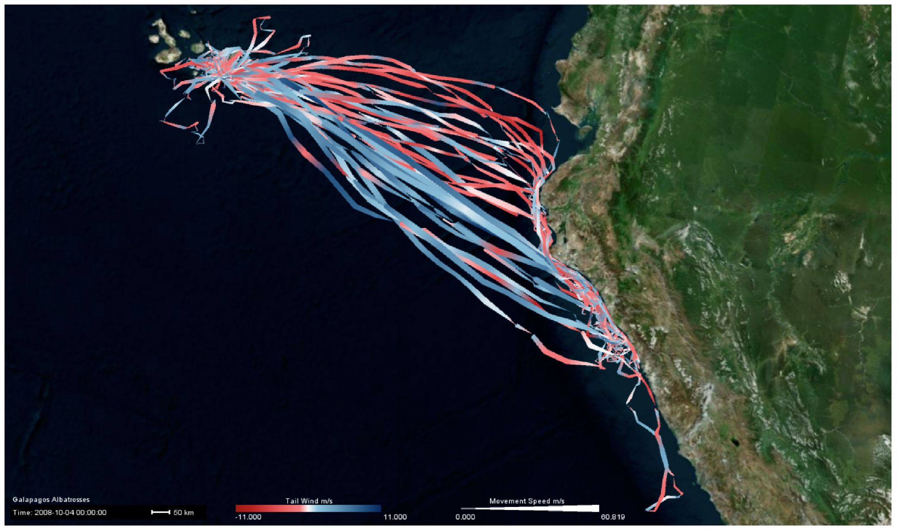Movebank — трекинг перелетов птиц
Movebank
Оперативная
Сервисы, основанные на местоположении (location-based services)
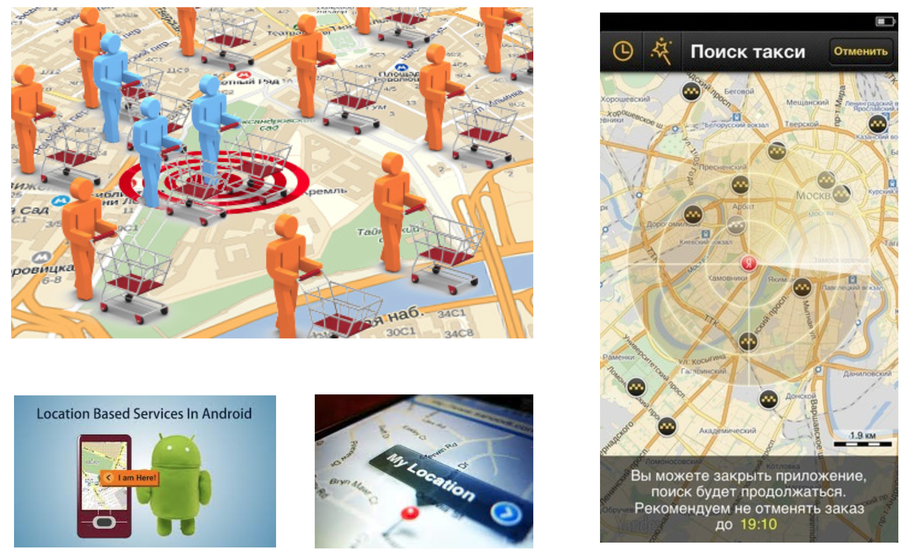Массовая
Географическая информация, генерируемая в большом объеме — большие данные (big data).
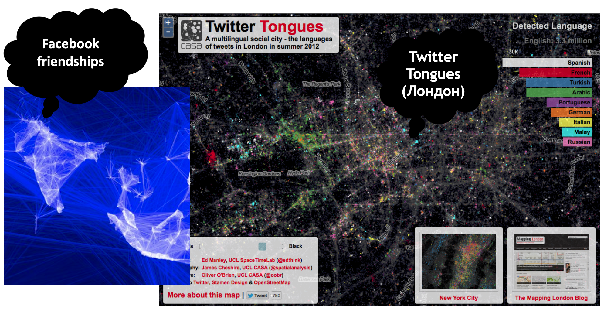Потоковая
Географическая информация в процессе передачи.
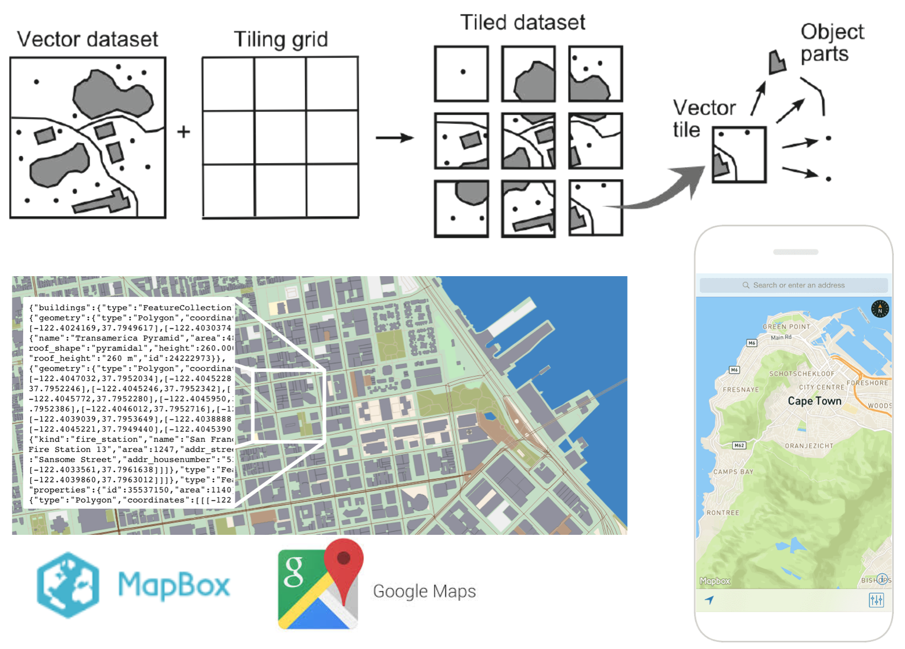Векторные тайлы
Потоковые данные визуализируются на устройстве-получателе.
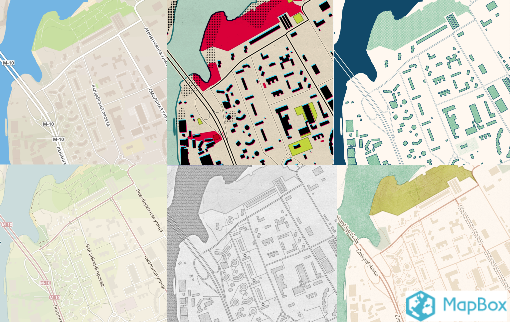Мультимасштабная
Географическая информация во множестве уровней детализации.
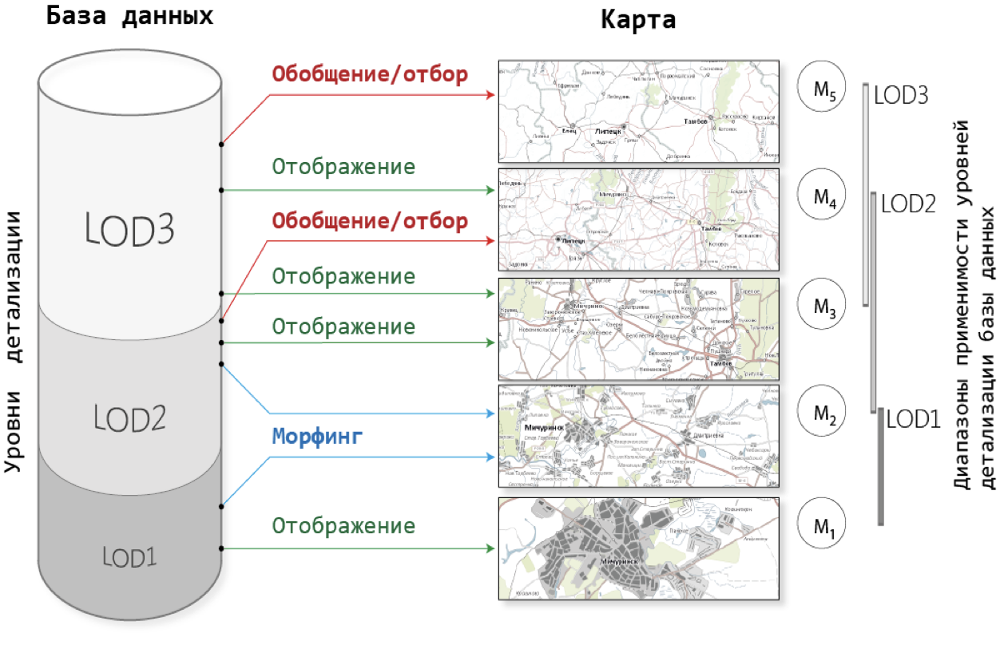
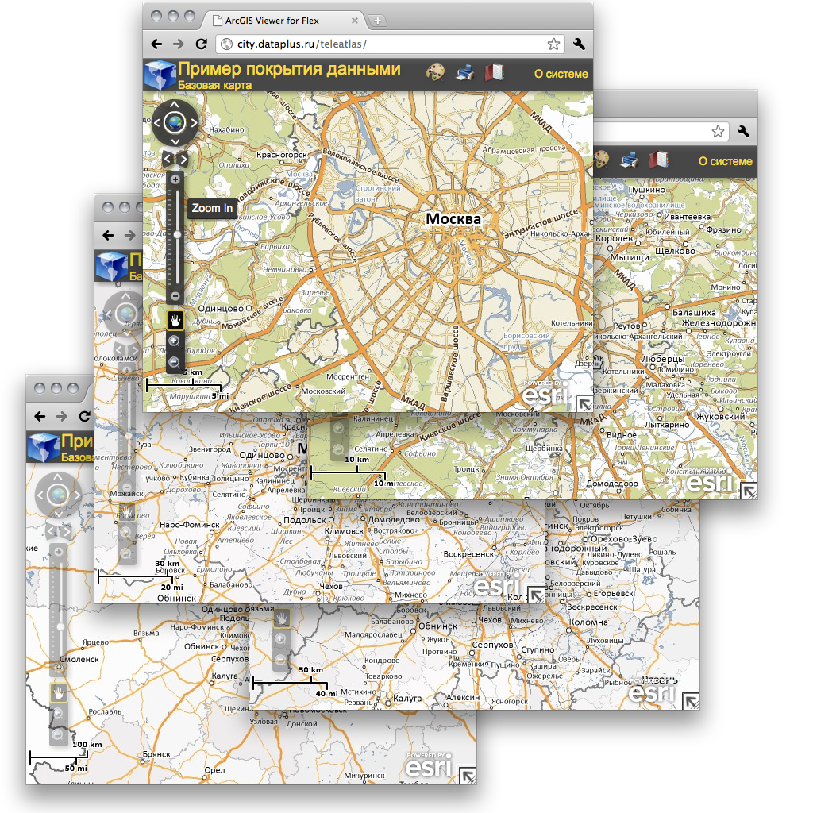
Многомерная
Трёхмерная, трёхмерно-динамическая

Волонтёрская
Volunteered geographic information (VGI) — географическая информация, создаваемая на добровольных началах
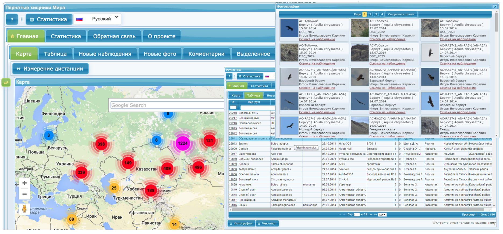Российская сеть изучения и охраны пернатых хищников
OpenStreetMap
OpenStreetMap (OSM) — крупнейший проект в области VGI
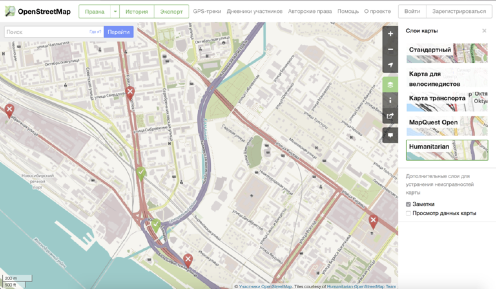http://www.openstreetmap.org
OpenStreetMap
Неопределенная
Географическая информация, обладающая свойствами непрецизионности, неточности и нечеткости.
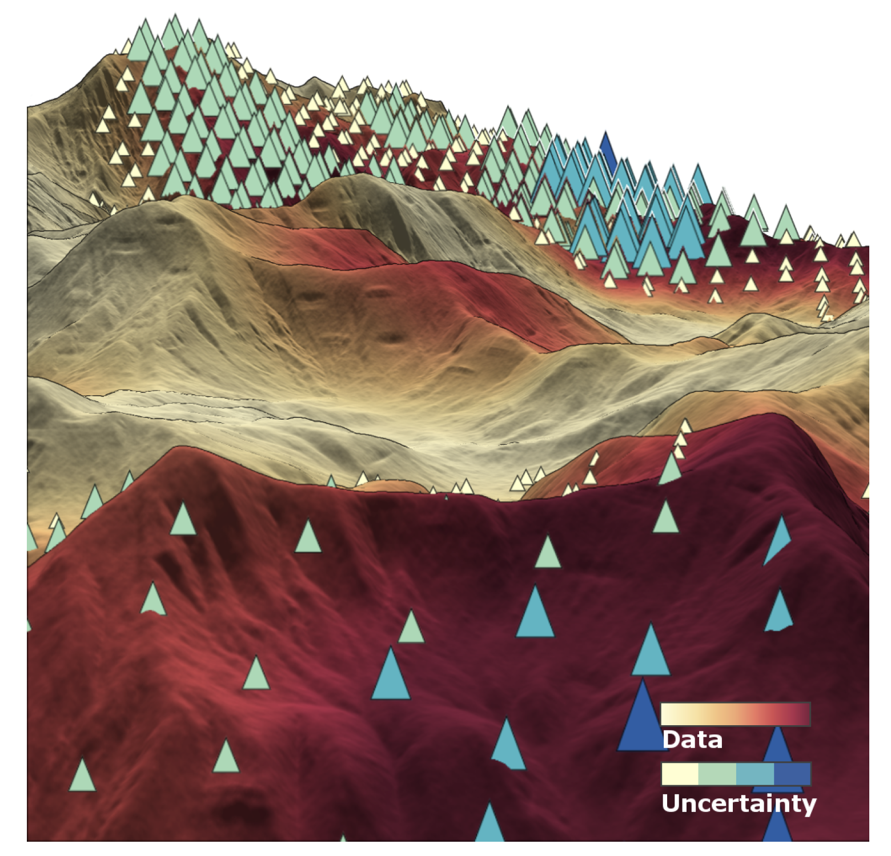
Синтезируемая
Географическая информация, полученная путем геосимуляций, геовычислений, геомоделирования.
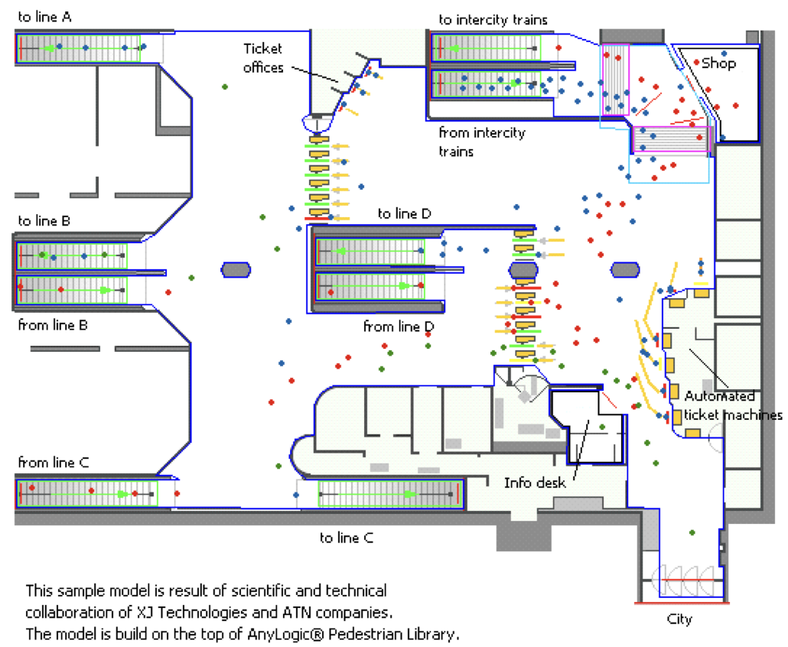
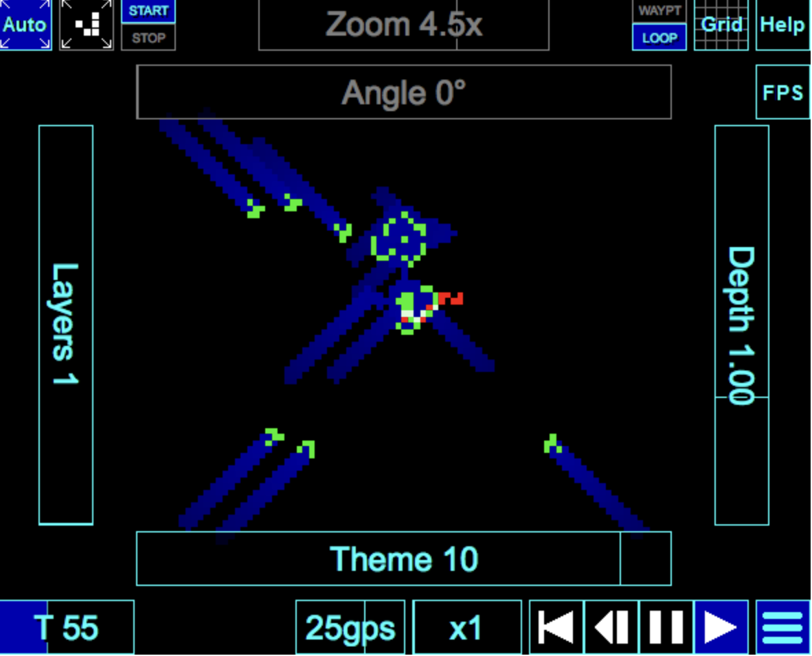
Геоинформатика
- Геоинформатика (наука)
-
Наука о географической информации, методах ее получения, представления, обработки, анализа и распространения.
Приложения
Геоинформатика позволяет изучать природные и социально-экономические геосистемы посредством компьютерного моделирования.
Пространственный объект
- Пространственный объект (ГОСТ Р 52438-2005 2018)
-
Цифровая модель материального или абстрактного объекта реального или виртуального мира с указанием его идентификатора, координатных и атрибутивных данных.
Примечание
- Объектом может быть неподвижный или движущийся простой или сложный объект, явление, событие, процесс и ситуация.
- Моделируемый объект может относиться к территории, акватории, недрам и воздушному пространству Земли, околоземному космическому пространству, другим космическим телам и небесной сфере.
- В широком смысле под пространственным объектом в геоинформатике понимается как сам объект, так и адекватная ему цифровая модель.
Пространственные данные
- Информация (ГОСТ 7.0-99 СИБИД 1999)
-
Сведения, воспринимаемые человеком и (или) специальными устройствами как отражение фактов материального или духовного мира в процессе коммуникации.
- Данные (ГОСТ 33707—2016 (ISO/IEC 2382:2015) 2016)
-
Представление информации в формальном виде, пригодном для передачи, интерпретации или обработки людьми или компьютерами.
- Пространственные данные (ГОСТ Р 52438-2005 2018)
-
Данные о пространственных объектах и их наборах.
Онтология понятий
flowchart LR A(Информация) --> B(Данные) C(Пространственный объект) --> D(Пространственные данные) A --> E(Географическая информация) B --> D E -.-> D
Примечание
Пространственные данные можно определить также как представление географической информации в формальном виде, пригодном для передачи, интерпретации или обработки людьми или компьютерами.
Географическая информационная система (ГИС)
- Информационная система (ГОСТ 7.0-99 СИБИД 1999)
-
Система, предназначенная для хранения, обработки, поиска, распространения, передачи и представления информации
- Географическая информационная система (ГОСТ Р 52438-2005 2018)
-
Информационная система, оперирующая пространственными данными.
Уточнение
ГИС можно определить систему, предназначенная для хранения, обработки, поиска, распространения, передачи и представления географической информации
Геоинформатика
- Геоинформатика (отрасль) (ГОСТ Р 52438-2005 2018)
-
Научно-техническое направление, объединяющее:
- теорию цифрового моделирования предметной области с использованием пространственных данных;
- технологии создания и использования геоинформационных систем;
- производство геоинформационной продукции и оказание геоинформационных услуг.
Будьте осторожны
В других сферах деятельности под аббревиатурой ГИС может подразумеваться геофизическое исследование скважин, государственная информационная система и т.д.
Три уровня моделирования
flowchart TB A((1)) ---> B((2)) B ---> C((3))
- Концептуальная модель (ГОСТ Р 43.0.3-2009 2018)
-
Абстрактная модель, определяющая структуру исследуемого объекта (составные части и связи), свойства составных частей, причинно-следственные связи
- Модель пространственных данных (Лурье 2016)
-
Набор логических правил формализованного цифрового описания объектов реальности как пространственных объектов.
- Модели пространственных объектов
-
Геометрические примитивы, используемые для координатного описания пространственных объектов или их частей.
Концептуальные модели
В реальном мире существует бесконечное разнообразие явлений.
Концептуальные модели
Объектно-ориентированная модель используется когда явление интерпретируется как состоящее из дискретных объектов с четкими границами. Характеристики объектов в пределах их границ предполагаются постоянными.
Пример
Здания имеют четкие границы и моделируются как отдельные объекты
Концептуальные модели
Сетевая модель используется для интерпретации явлений, состоящих из множества связанных между собой объектов. Сетевая модель является производной от объектно-ориентированной.
Пример
Автомобильные дороги всегда образуют сетевую структуру
Концептуальные модели
Модель географических полей используется для интерпретации явлений, сплошным образом покрывающих пространство. Как правило, моделируемая характеристика явления меняется непрерывно, но это не является обязательным условием.
Пример
Земная поверхность имеет сплошной характер, ее высота меняется [не]прерывно
Концептуальные модели
Особенности концептуальных моделей географических явлений:
Всегда являются упрощением реальности.
Обобщают модели картографической локализации (по пунктам, на линиях, по площадям, рассеянной, сплошной).
Выбираются в соответствии с масштабом и целью исследования, а также способом интерпретации явления.
Пример
Рельеф может рассматриватиься как совокупность форм (объектно-ориентированная модель) и как поверхность (модель географического поля).
Определяют выбор модели пространственных данных.
Модели пространственных данных
Модель пространственных данных определяется отображением множества объектов на множество значений их атрибутов.
Простой объект имеет одно значение каждого атрибута.
Вектор (vector)
Данные, состоящие из простых объектов, называются векторными, т.к. с каждым объектом ассоциирован единственный вектор значений атрибутов.
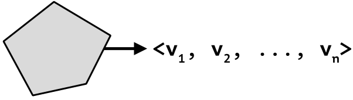
Сложный объект имеет множест-во значений каждого атрибута.
Покрытие (coverage)
В каждой точке, принадлежащей объекту, существует уникальное значение каждого атрибута. Его можно запросить с помощью функции, которая называется покрытием.
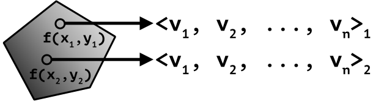
Векторная модель
Simple Features — стандарт OGC (2010), который определяет общую модель хранения и доступа к простым (векторным) объектам.
- все геометрии состоят из точек;
- все точки в геометрии имеют одинаковую размерность;
- размерность точек может быть 2, 3 или 4.
В дополнение к обязательным измерениям \(X\) и \(Y\) возможны:
- \(Z\), обозначающее высоту
- \(M\), обозначающее некоторую меру — например, время
Существует 4 варианта координат: \(XY\), \(XYZ\), \(XYM\) и \(XYZM\).
В географических координатах \(X\) — долгота, \(Y\) — широта.
Векторная модель
Стандарт включает в себя 17 моделей пространственных объектов.
Основными являются 7 моделей:
- Линейно связные:
POINT,LINESTRING,POLYGON - Линейно несвязные:
MULTIPOINT,MULTIPOINT,MULTIPOLYGON,GEOMETRYCOLLECTION
Линейная связность
Линейно связным называется пространство, в котором любые две точки можно соединить непрерывной кривой.

Оставшиеся виды моделей включают: CIRCULARSTRING, COMPOUNDCURVE, CURVEPOLYGON, MULTICURVE, MULTISURFACE, CURVE, SURFACE, POLYHEDRALSURFACE, TIN, TRIANGLE.
Векторная модель
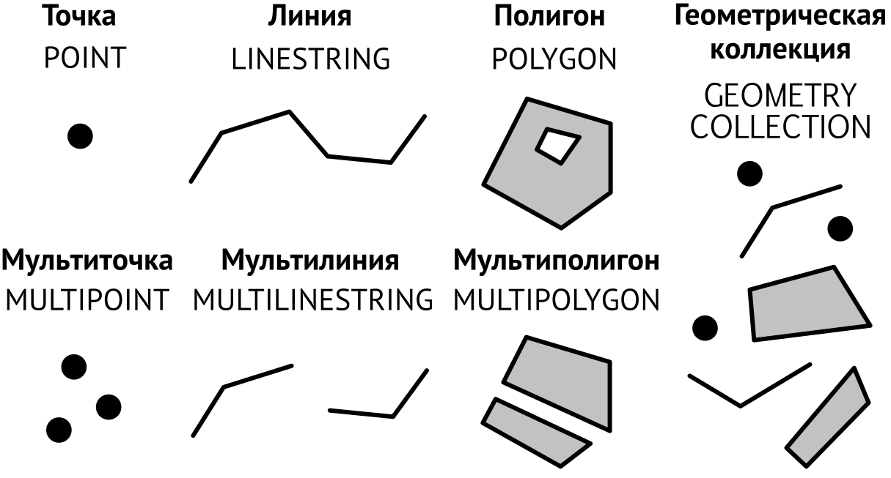Векторная модель
Линейно связные модели пространственных объектов.
| Тип | Описание |
|---|---|
POINT |
нуль-мерная геометрия, содержащая одну точку |
LINESTRING |
последовательность точек, соединенных прямыми, несамопересекающимися отрезками; одномерная геометрия |
POLYGON |
геометрия с положительной площадью (двумерная); последовательность точек, отрезки между которыми формируют замкнутое кольцо без самопересечений; первое кольцо является внешним, ноль и более остальных колец представляют дырки внутри полигона |
Векторная модель
Линейно несвязные модели пространственных объектов.
| Тип | Описание |
|---|---|
MULTIPOINT |
множество точек; геометрия типа MULTIPOINT называется простой если ни одна пара точек в MULTIPOINT не совпадает |
MULTILINESTRING |
множество линий |
MULTIPOLYGON |
множество полигонов |
GEOMETRYCOLLECTION |
множество геометрий произвольного типа за исключением GEOMETRYCOLLECTION |
Хранение координат
Well-Known Text (WKT) — текстовый формат
POINT (0.5 0.5)LINESTRING (0 1, 0.5 1.5, 1.2 1.2, 2 1.3, 3 2)POLYGON ((0.5 0.5, 2 0, 3 2, 1.5 4, 0 3, 0.5 0.5), (1 1, 0.8 2, 2 2.2, 1.4 1.1, 1 1))MULTIPOINT ((0.5 0.5), (1 3), (2 1), (0.2 2), (2 3), (1.5 1.5))MULTILINESTRING ((0.5 1.5, 1.2 1.2, 2 1.3), (0 1.5, 0.5 2, 1.2 1.7), (2 1.8, 3 2.5))Назначение
Формат WKT используется в текстовых форматах файлов, а также для визуального анализа координат объектов. Он занимает много места в памяти компьютера и медленно читается/записывается программами.
Хранение координат
Well-Known Binary (WKB) — бинарный формат
POINT: 01 01 00 00 00 00 00 00 00 00 00 e0 3f 00 00 00 00 00 00 e0 3fLINESTRING: 01 02 00 00 00 05 00 00 00 00 00 00 00 00 00 00 00 00 00 00 00 00 00 f0 3f 00 00 00 00 00 00 e0 3f 00 00 00 00 00 00 f8 3f 33 33 33 33 33 33 f3 3f 33 33 33 33 33 33 f3 3f 00 00 00 00 00 00 00 40 cd cc cc cc cc cc f4 3f 00 00 00 00 00 00 08 40 00 00 00 00 00 00 00 40Назначение
Формат WKB используется в бинарных форматах файлов, в том числе а базах данных. Он занимает мало места в памяти компьютера и быстро читается/записывается программами, но не подходит для визуального анализа.
Особенности векторной модели
- Используется для реализации объектно-ориентированной концептуальной модели.
- Основана на генерализации. Физическое или абстрактное тело представляется в виде конечного множества координат.
- В зависимости от уровня детализации один и тот же объект может представляться с помощью разной модели.
- Значения атрибутов в пределах границ каждого объекта предполагаются постоянными.
Ограничение
Векторная модель не годится для представления географических полей.
Модель покрытий
Модель покрытий предполагает, что можно представить поле изменения атрибутов внутри объектов.
Однако есть проблема
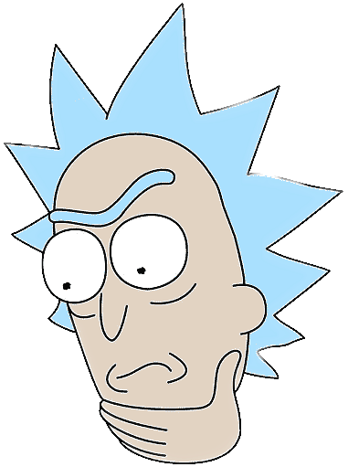
Географические поля определены на бесконечном множестве точек, в то время как любые модели данных состоят из конечного числа элементов. Как обойти это ограничение?
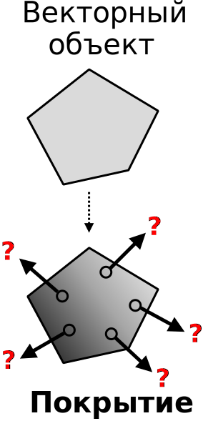
Решение
Необходимо внутри объекта создать сетку опорных геометрий и определить функцию, которая сможет интерполировать значения между ними.
Топологическое покрытие
Построение покрытия начинается с простого объекта, обозначающего границу покрытия.
Топологическое покрытие
В топологическом покрытии объект разрезается узлами и дугами на области фиксированных значений поля.
Топологическое покрытие
Функция покрытия в каждой точке возвращает значение полигона, который её покрывает. Покрытие является сплошным.
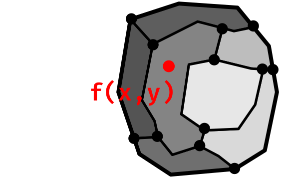Топологическое покрытие
Элементы топологической модели имеют свои названия.
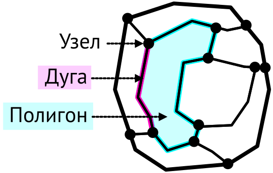
Ограничение
Топологическая модель подходит только для представления полей с пространственной структурой в виде областей фиксированных значений.
Триангуляционное покрытие
Построение покрытия начинается с простого объекта.
Триангуляционное покрытие
В объект добавляются известные значения геополя в точках.
Триангуляционное покрытие
Точки данных соединяются сплошной сеткой треугольников — триангуляцией.
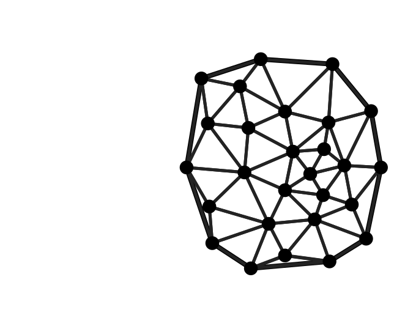Триангуляционное покрытие
Функция покрытия реализуется путем интерполяции (линейной, естественной и т.д.) поля внутри треугольников.
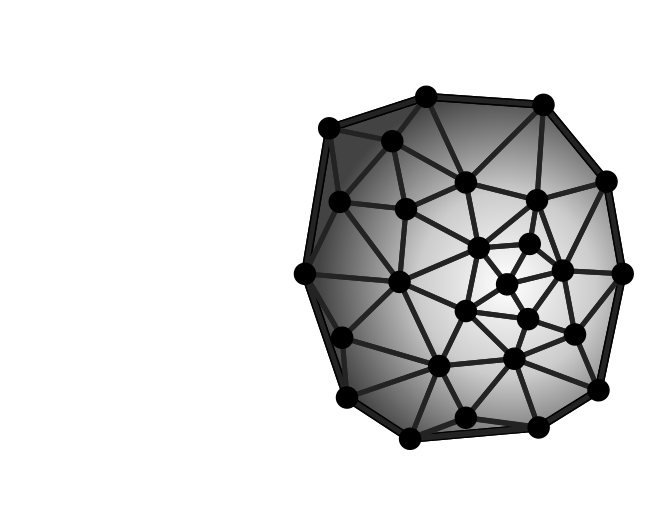Триангуляционное покрытие
У каждого узла есть область влияния. Совокупность таких областей называется диаграммой Вороного.
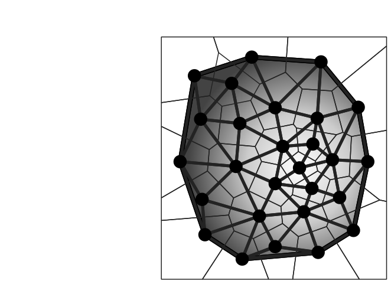Триангуляционное покрытие
Диаграмма Вороного дает альтернативную функцию покрытия, в которой поле считается постоянным в пределах областей.
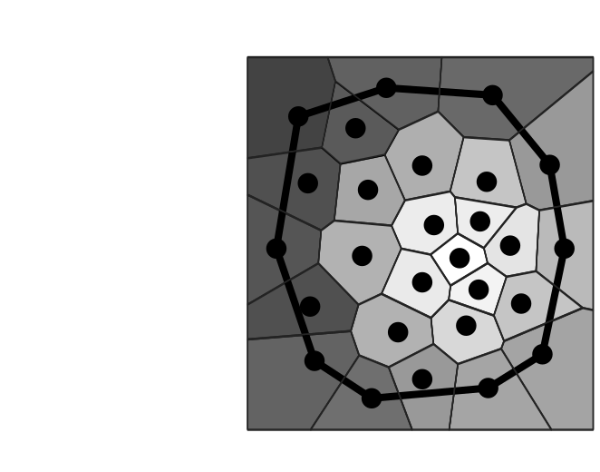Триангуляционное покрытие
Элементы триангуляционной модели имеют свои названия.
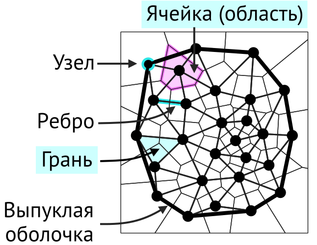Растровое покрытие
В растровом покрытии множество узлов с данными поля упорядочивается в виде матрицы — растра.
Растровое покрытие
Сетка четырехугольников на узлах с данными обеспечивает сплошное покрытие объекта.
Растровое покрытие
Функция покрытия реализуется путем интерполяции (билинейной, кубической и т.д.) внутри четырехугольников.
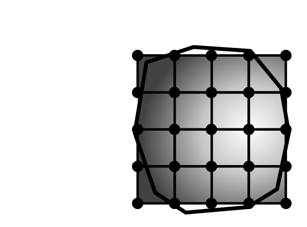Растровое покрытие
У каждого узла растра есть ассоциированная с ним зона влияния — пиксель.
Растровое покрытие
Пиксельное представление даёт альтернативную функцию покрытия, в которой поле считается постоянным в пикселе.
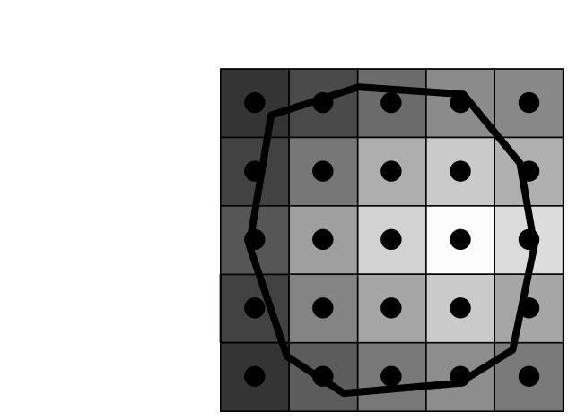Растровое покрытие
Элементы растровой модели имеют свои названия.
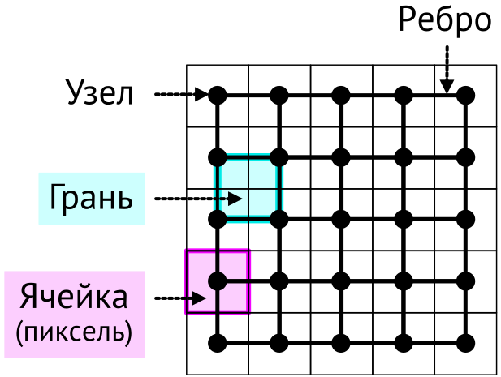Сравнение моделей покрытий
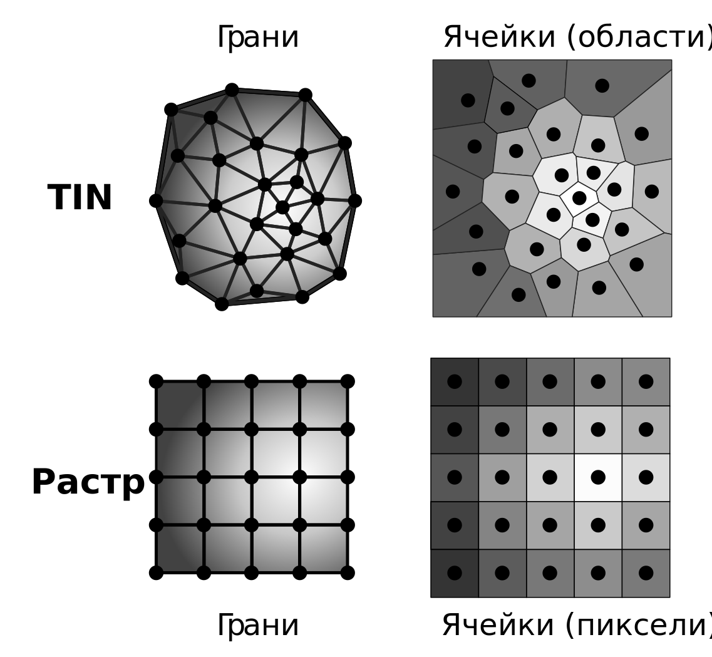
Модели покрытий имеют схожие элементы, но их названия различны.
Однако точки данных всегда называются узлами.
Преимущества моделей
Растр
- Регулярная матричная структура, позволяющая унифицировать операторы обработки данных.
- Компактное хранение (достаточно указать местоположение угла растра).
- Соответствие устройству матрицы сканерных снимков.
TIN
- Иррегулярная структура, позволяющая уплотнять данные в областях высокой изменчивости поля.
- Более точное взаимодействие с векторными данными, в т.ч. совместный анализ.
- Соответствие устройству трёхмерных моделей.
Геометрия растра
Геометрия растра определяет, где именно располагаются в пространстве узлы и может быть описана параметрами:
| Параметр | Назначение |
|---|---|
NCOLS |
Количество столбцов |
NROWS |
Количество строк |
XLLCENTER |
Координата \(X\) левого нижнего узла |
YLLCENTER |
Координата \(Y\) левого нижнего узла |
CELLSIZE |
Размер ячейки (расстояние между узлами) |
Обратите внимание
Растр может иметь разное расстояние между узлами по осям \(X\) и \(Y\). В этом случае вместо CELLSIZE указывается два параметра: CELLSIZEX и CELLSIZEY .
Пространственная привязка
- Пространственная привязка (ГОСТ Р 70316-2022 (ИСО 19112:2019) 2022)
-
Описание позиции в реальном мире.
Пространственная привязка может быть осуществлена двумя основными способами:
- с использованием координат;
- посредством географических идентификаторов.
Система координат
При использовании привязки по координатам необходимо описание системы координат.
Географические идентификаторы
Увязаны с местоположением, идентифицируемым географическими объектами. Взаимосвязь с объектом может быть установлена следующими основными способами:
локализацией, когда конкретная позиция находится внутри географического объекта, например в стране;
локальными измерениями, когда позиция определена относительно фиксированных точек географических объектов, например вдоль улицы на заданном расстоянии от пересечения с другой улицей. Этот аспект известен как линейная привязка;
слабо связанным способом, когда позиция имеет нечеткую взаимосвязь с географическими объектами, например рядом со зданием или между двумя зданиями.
Система координат
При описании системы координат последовательно указываются:
- Эллипсоид вращения — тело, по отношению к которому вычисляются геодезические координаты точек (широта, долгота)
- Исходные геодезические даты (датум) — параметры положения эллипсоида в теле Земли
- Географическая система координат — включает датум, положение начального меридиана и единицы измерения широт и долгот
- Проекция — математический способ перехода от географических координат на эллипсоиде к плоским прямоугольным координатам.
- Плоская прямоугольная система координат — включает проекцию, ее параметры и единицы измерения координат.
Форматы описания СК
Распространены 3 формата описания систмы координат (СК):
PROJ.4 String — представление в виде строки параметров.
WKT (Well-Known Text) — представление в виде иерархического списка. Это наиболее полный формат описания пространственной привязки, который рекомендуется к использованию для избежания неоднозначностей.
EPSG (European Petroleum Survey Group) — представление в виде числового кода.
Где найти описания СК?
Для поиска проекций в перечисленных форматах представления удобно воспользоваться порталом spatialreference.org.
PROJ.4 String
PROJ.4 String — строковый формат представления информации о пространственной привязки, введенный в библиотеке PROJ, начиная с версии 4. Основные параметры:
+datum Датум
+ellps Эллипсоид
+lat_0 Широта стандартной параллели
+lat_1 Широта первой стандартной параллели
+lat_2 Широта второй стандартной параллели
+lat_ts Широта нулевых искажений
+lon_0 Центральный меридиан
+proj Проекция
+units Единицы измерения координат
+vunits Единицы измерения высот
+x_0 Восточное указание
+y_0 Северное указание
+zone Номер зоныPROJ.4 String — примеры
- Географические координаты в СК WGS84 (без проекции):
+proj=longlat +datum=WGS84 +no_defs- Проекция Web Mercator (Google Maps, Яндекс.Карты и т.д.):
+proj=merc +a=6378137 +b=6378137 +lat_ts=0 +lon_0=0 +x_0=0 +y_0=0 +k=1 +units=m +nadgrids=@null +wktext +no_defs- Коническая равнопромежуточная проекция:
+proj=eqdc +lat_0=0 +lon_0=0 +lat_1=60 +lat_2=60 +x_0=0 +y_0=0 +datum=WGS84 +units=m +no_defs- Проекция UTM, зона 37:
+proj=utm +zone=37 +datum=WGS84 +units=m +no_defsWKT (Well-Known Text)
WKT хранит описания СК в виде иерархического списка:
PROJCS["WGS 84 / EPSG Russia Polar Stereographic",
GEOGCS["WGS 84",
DATUM["WGS_1984",
SPHEROID["WGS 84",6378137,298.257223563,
AUTHORITY["EPSG","7030"]],
AUTHORITY["EPSG","6326"]],
PRIMEM["Greenwich",0,
AUTHORITY["EPSG","8901"]],
UNIT["degree",0.0174532925199433,
AUTHORITY["EPSG","9122"]],
AUTHORITY["EPSG","4326"]],
PROJECTION["Polar_Stereographic"],
PARAMETER["latitude_of_origin",90],
PARAMETER["central_meridian",105],
PARAMETER["scale_factor",0.994],
PARAMETER["false_easting",2000000],
PARAMETER["false_northing",2000000],
UNIT["metre",1,
AUTHORITY["EPSG","9001"]],
AXIS["X",EAST],
AXIS["Y",NORTH],
AUTHORITY["EPSG","5940"]]Полярная стереографическая проекция
EPSG
EPSG (European Petroleum Survey Group) — европейская рабочая группа нефтегазовой области, которая ведет реестр систем координат с уникальными цифровыми кодами вида EPSG:xxxxxx.
Коды EPSG оказались удобны, поэтому используются повсеместно для быстрой инициализации проекций со стандартными параметрами.
Например, ранее рассмотренные проекции имеют коды:
- WGS84:
EPSG:4326 - Web Mercator:
EPSG:3857 - UTM:
EPSG:326.., например для UTM 37N:EPSG:32637
spatialreference.org
Удобный ресурс для поиска описаний систем координат
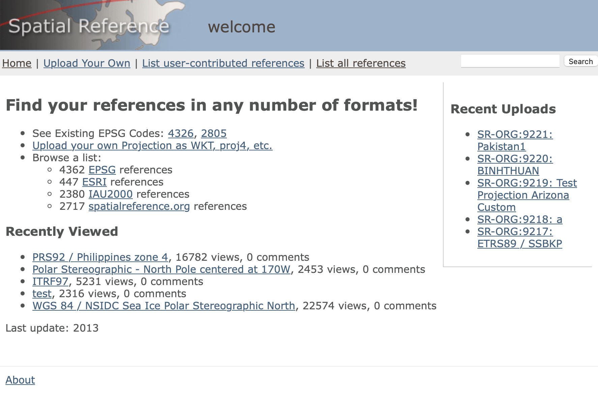proj.org
Сайт библиотеки PROJ имеет описания проекций
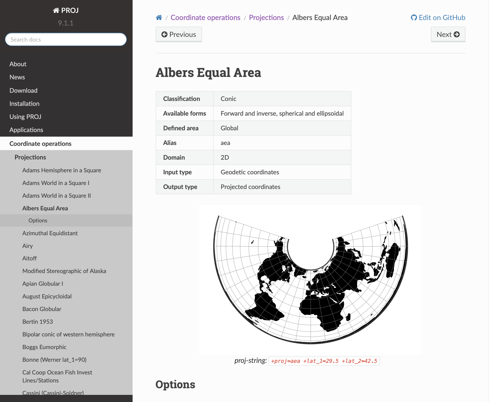Coordinate operations —> Projections
Операции с системами координат
При работа с пространственными данными используется 4 основных операции над системами координат:
Создание — позволяет сопроводить данные информацией о том, в какой системе хранятся координаты объектов.
Переопределение — используется в случае, если СК указана неправильно. Например, данные хранятся в градусах, а в параметрах указано, что это проекция Меркатора.
Чтение — используется программным обеспечением для того чтобы правильно позиционировать объекты относительно референцного тела (Земли).
Преобразование — используется для получения нового набора данных в другой системе координат.
Преобразование координат
Преобразование координат включает три различных операции:
Трансформирование — пересчет географических координат с одного датума на другой.
Проецирование — от географических координат к плоским прямоугольным.
Обратное проецирование — от плоских прямоугольных координат к географическим.
flowchart TB A(UTM) -- Обратное проецирование --> B(WGS84) subgraph gcs [ ] B -- Трансформирование --> C(ГСК-2011) end C -- Проецирование --> В(Гаусса-Крюгера)
projectionwizard.org
Веб-приложение для выбора оптимальной проекции
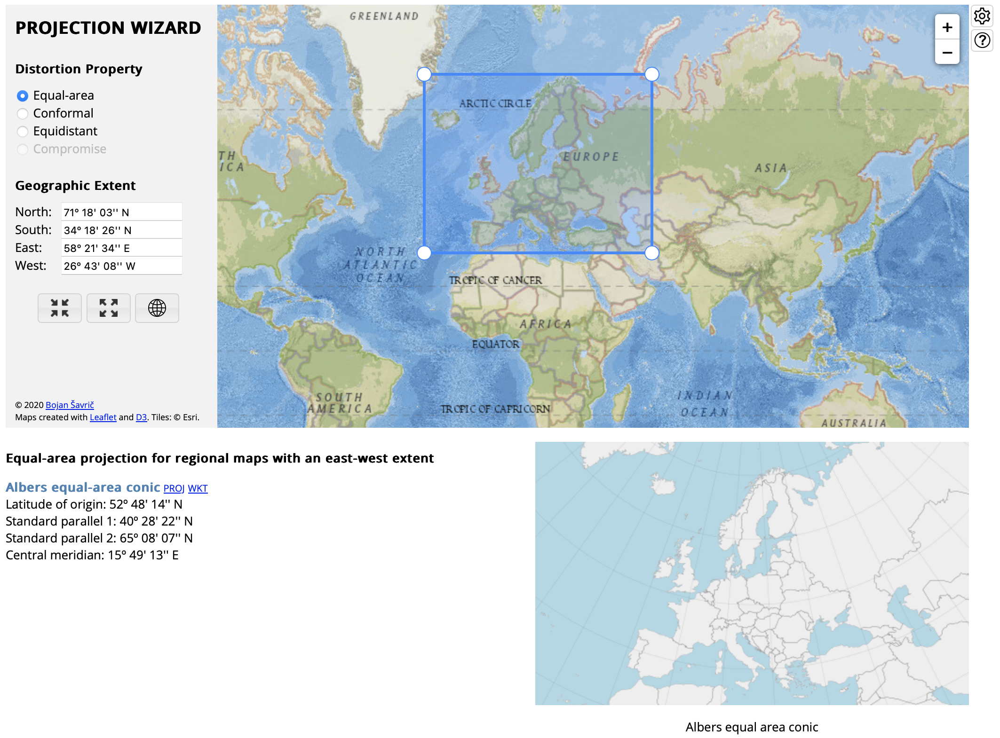Координатная привязка
- Координатная привязка
-
Преобразование координат, которое привязывает пространст-венные объекты к их местоположению в реальном мире.
Когда нужна координатная привязка?
- Информация о СК отсутствует или ошибочна (например — сканированная карта).
- Информация о СК имеется, но координаты объектов искажены и требуют корректировки (например, есть систематическая ошибка в измерениях).
Регистрация
Процесс координатной привязки также называют регистрацией.
Контрольные точки
Координатная привязка выполняется по контрольным точкам.
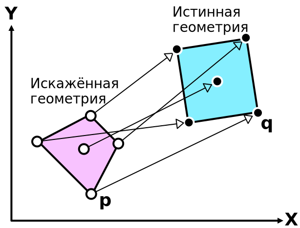
Необходимо указать несколько пар точек.
Каждая пара создается в следующем порядке:
сначала в текущем положении (p)
затем в истинном положении (q).
Полученные вектора используются для трансформации координат.
Аффинное преобразование
- Аффинное преобразование
-
Отображение плоскости или пространства в себя, при котором параллельные прямые переходят в параллельные прямые, пересекающиеся — в пересекающиеся, скрещивающиеся — в скрещивающиеся
Позволяет решать простые случаи привязки:
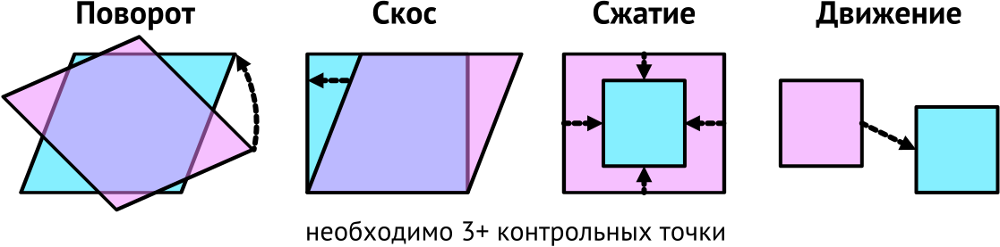Сложные преобразования
В тех случаях, когда аффинных преобразований недостаточно, могут быть использованы более сложные:
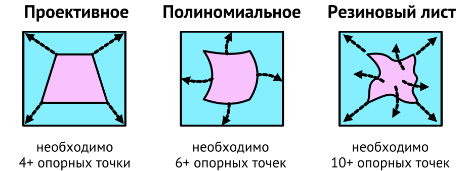Метод резинового листа является наиболее гибким и позволяет делать локализованные трансформации объектов (изображений).
Зачет по курсу
В курсе предусмотрено 4 вида контроля:
| # | Вид контроля | Время |
|---|---|---|
| 1 | Практические работы | Весь семестр |
| 2 | Самостоятельная работа | Середина семестра |
| 3 | Контрольное задание | Конец семестра |
| 4 | Теоретический тест | Зачетная сессия |
Если по всем пунктам имеется зачёт, то вы имеете зачет по курсу.
Всем удачи!